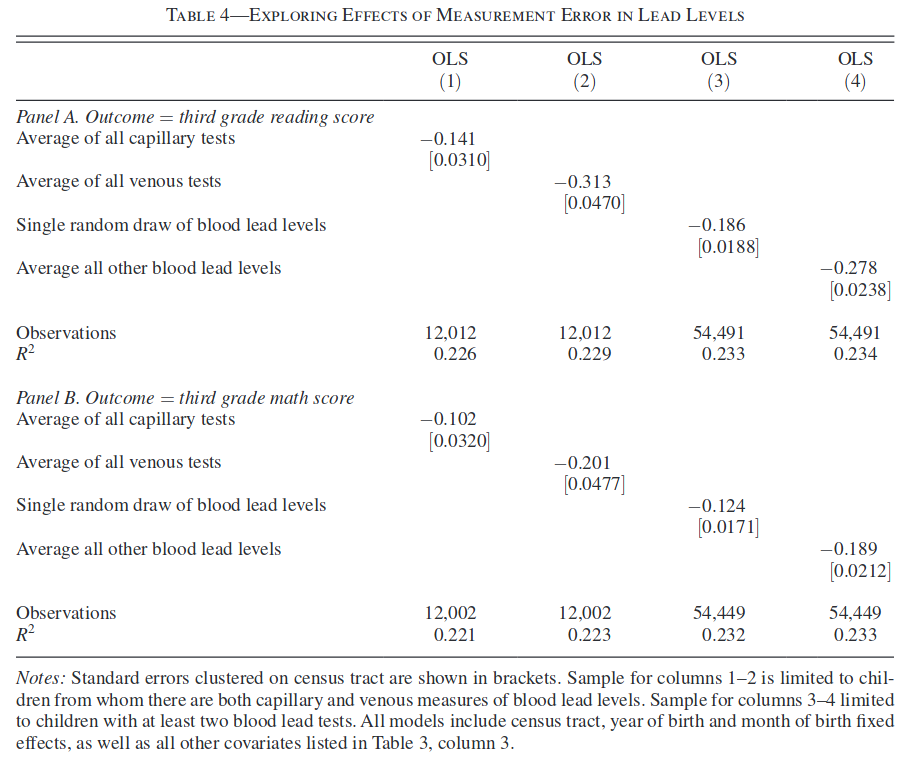
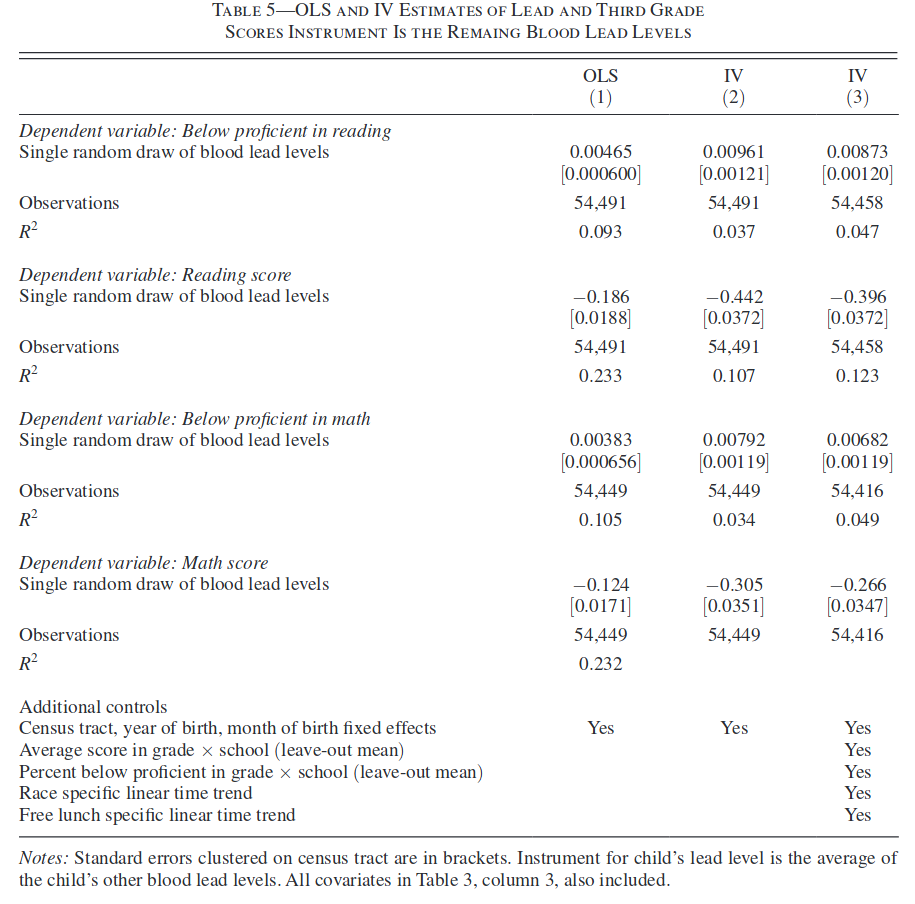

ECON 626: Problem Set 6
\[ \def\Er{{\mathrm{E}}} \def\En{{\mathbb{En}}} \def\cov{{\mathrm{Cov}}} \def\var{{\mathrm{Var}}} \def\R{{\mathbb{R}}} \newcommand\norm[1]{\left\lVert#1\right\rVert} \def\rank{{\mathrm{rank}}} \newcommand{\inpr}{ \overset{p^*_{\scriptscriptstyle n}}{\longrightarrow}} \def\inprob{{\,{\buildrel p \over \rightarrow}\,}} \def\indist{\,{\buildrel d \over \rightarrow}\,} \DeclareMathOperator*{\plim}{plim}\]
Problem 1
Consider the simple regression model \[ y_i = \beta_0 + \beta_1 x^*_i + \epsilon_i \] Assume that \(\var(x^*)>0\) and \(\Er[x^* \epsilon] = 0\). However, \(x^*\) is measured with error. Instead of observing \(x^*\), you observe \(x_i = x^*_i + u_i\). Assume that \(\Er[u] = 0\), \(\Er[u x^*] =0\) and \(\Er[\epsilon u] = 0\).
1
Find \(\plim \hat{\beta}_1\), where \(\hat{\beta}_1\) is the OLS etimator.
2
In ``Do Low Levels of Blood Lead Reduce Children’s Future Test Scores?’’ Aizer et al. (2018) examine the relationship between blood lead levels and children’s test scores. Table 4 shows estimates of \(\beta_1\) from regressions of
\[ test_i = \beta_0 + \beta_1 lead_i + \text{ other controls} + \epsilon_i \tag{1}\]
where \(test_i\) is a 3rd grade reading or math test and \(lead_i\) is a blood lead level measurement taken before the age of six. Some children had multiple measurements of their blood lead levels taken. Each blood lead level measurement has some error. In comparing columns (1) and (2), note that venous tests are known to have less measurement error than capillary tests, and in comparing columns (3) and (4) the average of all blood lead levels has less measurement error than a single one. Are the changes in the estimates across columns what you would expect from part part 1? Why or why not?

3
Suppose \(z_i\) is a second measurement of \(x^*\), [ z_i = x^*_i + e_i ] with \(\Er[e] = 0\), \(\Er[x^* e] = 0\), \(\Er[\epsilon e] = 0\) and \(\Er[e u] = 0\). Show that \[ \hat{\beta}_1^{IV} = \frac{\sum_{i=1}^n (z_i - \bar{z}) y_i} {\sum_{i=1}^n (z_i - \bar{z}) x_i} \] is a consistent estimate of \(\beta_1\).
4
Table 5 from Aizer et al. (2018), shows additional estimates of the model Equation 1. Column (1) shows standard multiple regression estimates. Columns (2) and (3) show estimates using the estimator \(\hat{\beta}_1^{IV}\) from part 3. Is the change in the estimates between columns (1) and (2) what you would expect based on parts 1 and 3? Why or why not?

Problem 2
In the linear model, \[ y = \underbrace{X}_{n \times k} \beta + \epsilon, \] partition \(X\) as \[ X= \begin{pmatrix} \underbrace{X_1}_{n \times k_1} & \underbrace{ X_2}_{n \times (k - k_1)} \end{pmatrix} \]
and \(\beta = \begin{pmatrix} \beta_1\\ \beta_2 \end{pmatrix}\).
Let \(\hat{\beta} = \begin{pmatrix} \hat{\beta}_1\\ \hat{\beta}_2 \end{pmatrix}\) be the OLS estimator.
Show that \[ \hat{\beta}_1 = \textrm{arg}\min_{b_1} \norm{M_{X_2} y - M_{X_2} X_1 b_1 }^2 \] where \(M_{X_2} = I - X_2 (X_2' X_2)^{-1} X_2'\).